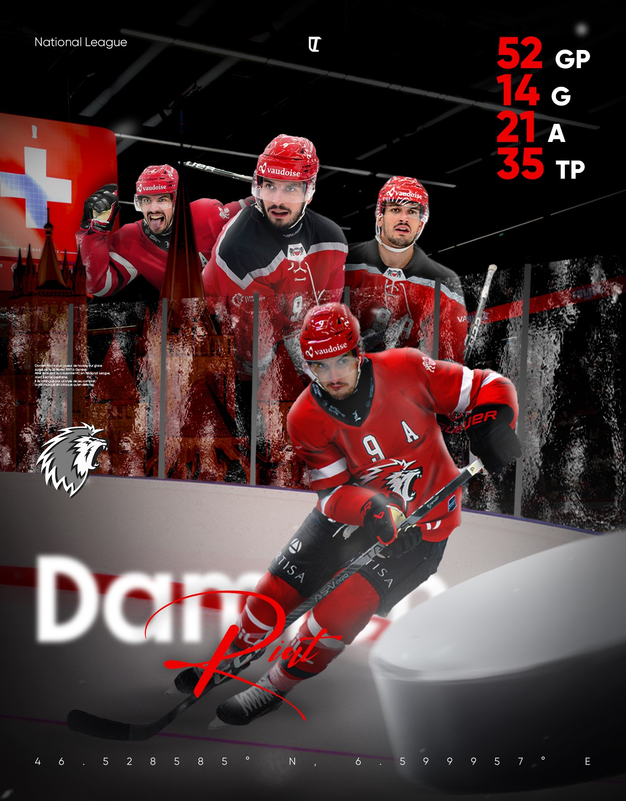
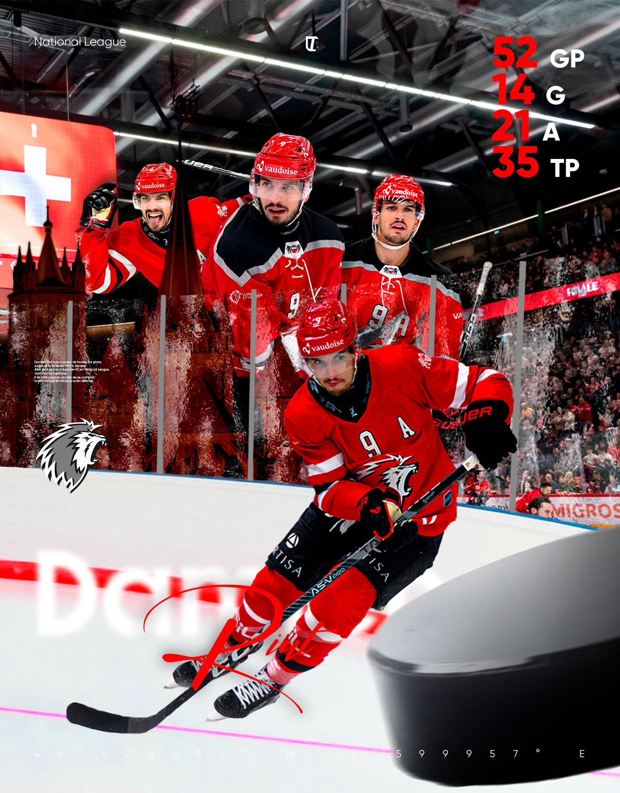

08 Sport design, projet personnel, sept. 2026
Damien Riat
Le hockey, pas le foot.
J'avais envie d'une affiche de sport design qui sorte du football. Un des meilleurs clubs de hockey du pays joue dans ma ville, je n'ai pas hésité longtemps. Damien Riat évolue au Lausanne HC en National League, dont il est le capitaine.
L'affiche est un bilan de saison : les chiffres en haut, le joueur au centre, la patinoire et les couleurs du club autour. Trois heures de travail, seul, et c'est à ce jour celle dont je suis le plus content.

L'affiche, bilan de saison
01 Le vrai travail
Le détourage, c'est bien. La retouche, c'est mieux.
Découper quatre plans du joueur, ce n'est pas là que le temps part. Le temps part après : faire tenir ensemble quatre photos prises à des matchs différents, sous des lumières différentes, avec des maillots différents, et obtenir une image qui semble avoir été prise le même soir.

02 Le résultat
Approuvé par Damien Riat.
Je l'ai postée sur Instagram, et Damien Riat l'a likée. Pour une affiche faite sans commande, sans contact et sans autre motivation que l'envie, c'est le meilleur retour possible.
Ce qui me gêne encore : le palet en bas à droite. Il devait apporter de la profondeur, un avant-plan qui casse le plat de l'image. Il fait le travail, mais il n'est pas assez bien traité. C'est la première chose que je reprendrais.
Exercice personnel non commercial, réalisé à partir de photographies de presse retouchées. Aucune affiliation avec le Lausanne HC, la National League ou les marques visibles sur l'équipement.